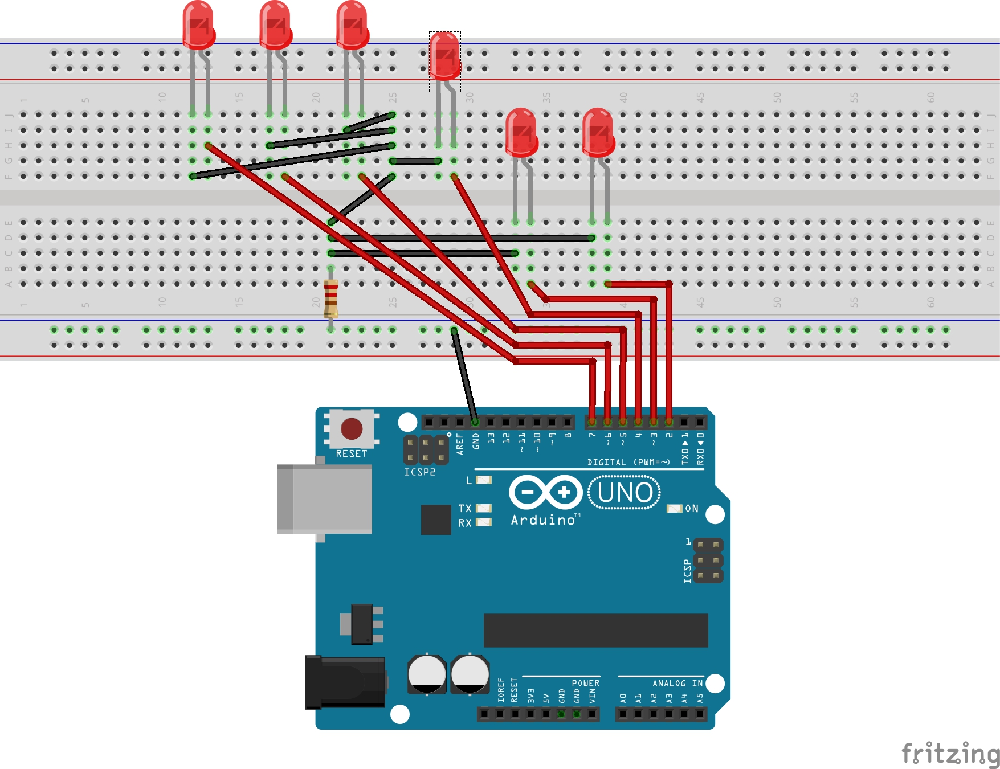

Dados electrónicos
Necesitamos:
- Placa Arduino
- Placa Board / Protoboard
- 6 LEDs
- Cables
- 1 resistencia 1000 ohmios
Lo colocaremos así:
Para programarlo, tendremos que declarar que todos los pines (es mejor ponerlos todos juntos, luego veréis por qué) son de salida (OUTPUT). Esto lo haremos dentro de las llaves del void setup():
pinMode(2, OUTPUT);
pinMode(3, OUTPUT);
pinMode(4, OUTPUT);
pinMode(5, OUTPUT);
pinMode(6, OUTPUT);
pinMode(7, OUTPUT);
pinMode(8, OUTPUT);
Ahora vamos a hacer que cada segundo salga un número aleatorio entre 0 y 6. ¿Cómo? Con la función random(MINIMO, MAXIMO+1); dentro del void loop(), ya que queremos que se repita siempre.
Para hacerlo entre 0 y 6, tendremos que escribir random(0, 7) ya que el 7 no está incluido.
Usaremos el "if" con la condición, comprobando número por número si coincide con el aleatorio que nos ha dado Arduino.
int aleatorio = random(0, 7); // El número ALEATORIO
if (aleatorio == 6){ // Comprobamos si coincide con uno de ellos
digitalWrite(8, HIGH);
}
if (aleatorio == 5){
digitalWrite(7, HIGH);
}
if (aleatorio == 4){
digitalWrite(6, HIGH);
}
if (aleatorio == 3){
digitalWrite(5, HIGH);
}
if (aleatorio == 2){
digitalWrite(4, HIGH);
}
if (aleatorio == 1){
digitalWrite(3, HIGH);
}
if (aleatorio == 0){
digitalWrite(2, HIGH);
}
delay(1000); // Esperar 1 segundo
digitalWrite(8, LOW); // Apagar TODOS los LEDs
digitalWrite(7, LOW);
digitalWrite(6, LOW);
digitalWrite(5, LOW);
digitalWrite(4, LOW);
digitalWrite(3, LOW);
digitalWrite(2, LOW);
Pero tenemos una solución aún mejor
Si os fijáis siempre el número del pin es el número aleatorio más 2. Además, estamos apagando todos los LEDs al final aunque solo haya habido uno encendido.
Vamos a crear otra variable de la siguiente manera: int pin = aleatorio + 2; y así sabremos directamente el número del pin que hay que encender y luego apagar.
Así podemos quitar todos los molestos condicionales "if" y dejar solamente el siguiente código dentro del void loop():
int aleatorio = random(0, 7); // El número ALEATORIO
int pin = aleatorio + 2; // El pin
digitalWrite(pin, HIGH); // Encender solo el que queremos
delay(1000); // Esperar 1 segundo
digitalWrite(pin, LOW); // Apagar solo el que hay encendido